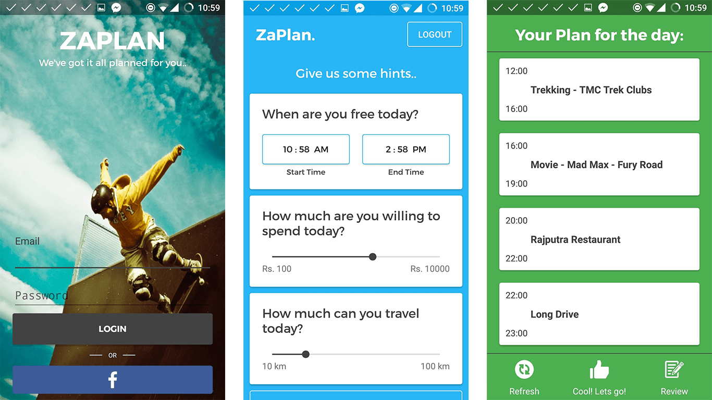

Zaplan
ML Based Impromptu Day Trip Planer App
Team Size: 3, Find Project on: Github
Abstract
Have you ever woken up some day, realized you have a day off, your friends are mostly busy and you have nothing to do? A lot of us live in cities we haven't fully explored yet. Ever been to that museum you've only heard of? How about a traditional lunch at the city center? And then maybe a visit to that park where a festival's in progress followed by dinner at popular street food stalls? or a movie maybe? Sounds fun right?
That's exactly what zaplan helps you come over (#struggles). It literally conjours up a day plan for you, on the spot and suggests you places to visit around the day. Zaplan is an impromptu day trip planner app for you, which learns form your previous experiences and recommends new restaurants and places using machine learning.
App Screenshots
Solution
Android App's Infrastructure
Zalan's android client comprises of 3 major activities: Login, User Input and Plan Display. Zaplan app follows material design guidelines, inflating a simple minimalisitic user interface. We've integrated Facebook SDK to implement login-via-facebook. We've also integrated Firebase SDK in app for the purpose of storing user data. Once user is successfully logged in, user details are stored in Firebase database. This database would be linked to our machine learning web APIs. For calling various APIs from app we use volley library. App fetches data from our APIs in JSON format, parses this raw data and inflates the UI of Plan-Display activity.
Backend/Web-APIs and Machine Learning
Behind the scenes, Zaplan uses a custom API (built in Python, Flask RESTful) atop a mash of the Google Places API and Zomato API. The API uses an algorithm to figure out the best places nearby and sends data back as JSON. The user is presented this in a timeline format. As of now, we've implemented some Machine Learning techniques which helps us realize whether the user likes the restaurants or not (This large matrix is visible if you query the API).
Link
Project URL: Zaplan - Github, Zaplan - HerokuAPI